The Doorone index for the whole archive
Everything made from the MARKOV POET archive and the fourteen WYGWYL poems, in one place. 23 instruments you can work in, 5 libraries you can search and take from, the finished works, the five cuts, and the record of what went wrong. Every count and every byte on this page was measured off the disk when it was built; every preview is a real frame from the thing it stands for.
55 ENTRIES · 8,850 FILES · 12.3 GB · BUILT 2026-10-01 17:22
OPERATE tools you work in · 23
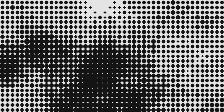
OPERATOR 16
The patch studio: lay images into a 192x144 ink field as corner-dragged quads, bind them to the limbs of a beflix body so they carry when it moves, blend nine ways, and stream a whole poem or a whole film onto the strip.
Heaviest tool here. A picked region is still not a nameable part — that gap is written up in cut/pf/OP16_FIT.md.
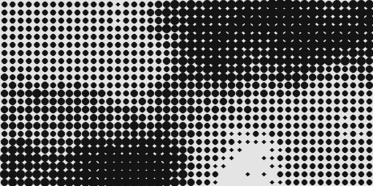
OPERATOR 15
The previous operator, kept whole: single-frame patch work before spans, quads and binding existed.
Superseded by I01. Kept because it is the last version where a patch was just x, y and size.
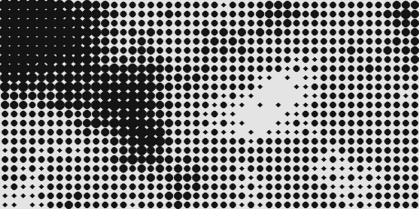
OPERATOR 14
The first operator — the studio in its original form, where the dot law and the patch ontology were worked out.
Superseded twice.
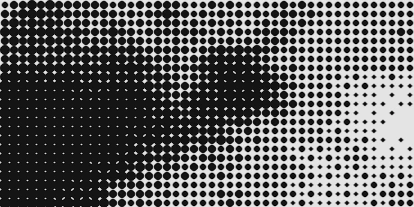
PASTE
The blend table: two grids, nine folds — over, behind, deepen, lift, darkest, lightest, differ, mask, knock — on eight ink weights.
A bench, not a composer. It shows you what a blend does; it does not keep the result.
HELD
The archive shelf: 2,033 cut-out subjects, cropped to their own alpha and capped at 256px, pickable into any socket.
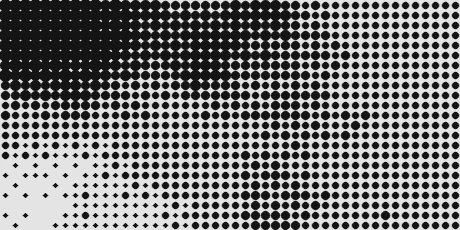
HALFWORLD STUDIO
The world bench: compose a halfworld from grounds, worlds, elements and ink, and watch it resolve at the dot law.
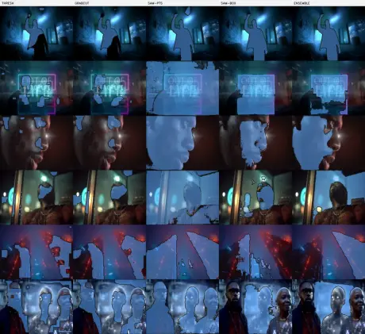
THE LAB
Finding the body: segmentation probes over the archive, looking for the limbs a photograph does not have.
Research bench. Several probes are dead ends and are left in as dead ends.
PATCHFIELD
A field of patches at once — the whole ontology laid out flat so you can see what kind each thing is.
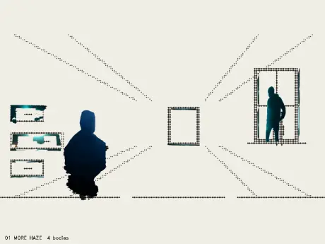
DRESS
Skins mapped onto moving bodies: a texture taken across a silhouette as it walks.
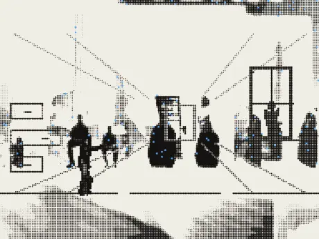
INHABIT
Putting a real subject inside a generated place, and measuring whether the place accepts it.
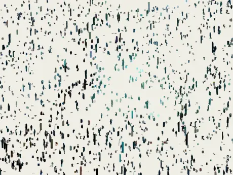
THE LOOM
Weaving two sources into one strip, warp and weft, frame against frame.
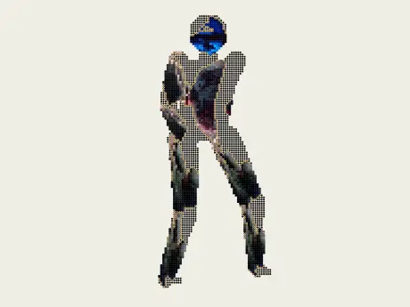
TEXTULE
Text as texture: the poems rendered as surface rather than as words to read.
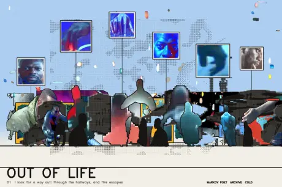
THE CITY
Archigram method on the archive: the film’s architecture drawn as plug-in parts.
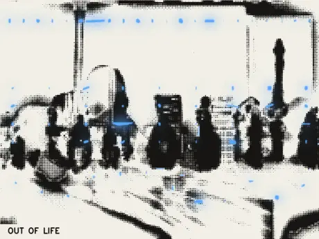
THE SETS
Twenty-eight scenes staged as sets — each one a place the film could be shot in rather than a shot.
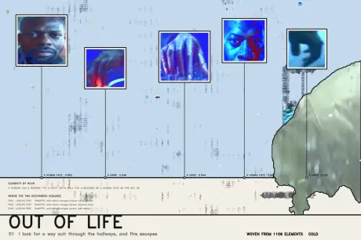
THE WOVEN SHEETS
Contact sheets woven from the archive, fourteen of them, one per poem.

I AM SITTING IN A ROOM
Lucier’s method applied to an image: re-render the re-render until only the room is left.
CHURN
A radio: the archive cut, re-cut and broadcast against itself, continuously.
1.1 GB of rendered segments on disk.
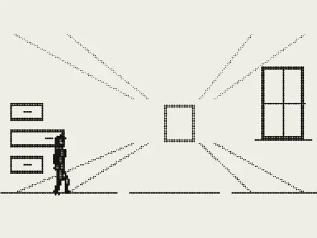
MOUSSA
The carrier study — one body carried through every poem in the suite.
1.3 GB.
THE JOURNEYS
Routes through the archive computed as journeys rather than cuts.
393 MB.
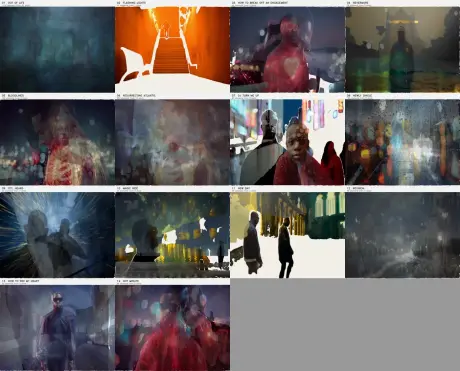
THE COLLAGES
The first collage bench — thirty-three works and the grammar they were built with.
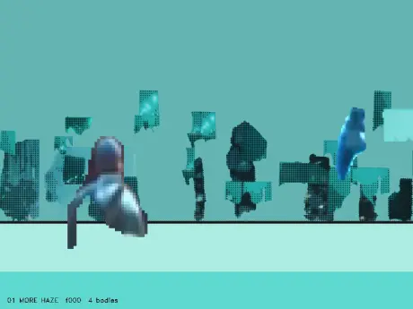
PREVIS
Previsualisation of the suite: fourteen leads, one per poem.
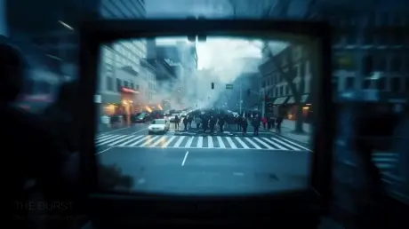
THE SIX
Six WYGWYL shorts, cut and playable.
923 MB.
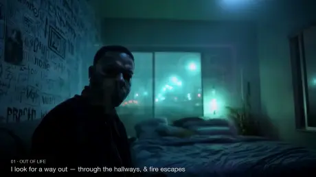
FIVE CUTS
The player for the five master cuts, the concordance and the music map, with a pane that tracks the playhead.
BROWSE libraries you search and take from · 5

THE BOARD
2,275 rows — every image this archive made, each with its prompt, sortable by poem, type, video or still, and downloadable a row at a time as a real ZIP written by hand in the page.
Images load on an IntersectionObserver; a cold scroll to the bottom pulls a lot of files.
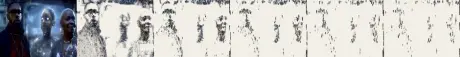
EVERY EXPERIMENT
Forty-five works gathered into one folder — 834 moving pieces and 4,384 stills — with the prompt or the inspiration for each written beside it.
10.0 GB in place. The folder links by relative path, never by symlink: directory symlinks here took down every Pages deploy.

THE COLLAGE ZETTELS
107 zettels, one per collage at every stage, each with the image and a text-to-video cineosis prompt written for it — collage 33, scene 28, cutsheet 14, lucier 20, plate 9, quilt 1, partswap 1, patchfield 1.
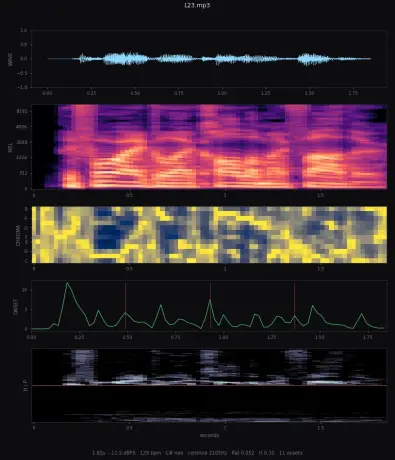
AUDIO RADIOLOGY
1,095 sounds, every one imaged on five planes (waveform, mel, chroma, onset and beat, harmonic/percussive split) with eighteen measurements and a Krumhansl–Schmuckler key, then named by CLAP on four axes with an EarSketch constant.
Lives at the repository root in audio/, beside the film’s own sound. Plates are 59 MB of WebP and are NOT yet committed — see the note at the foot of this page.
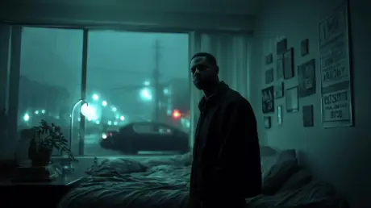
MARKOV POET GALLERY
The archive’s own gallery of the 135 generated shots.
LOOK finished images · 5
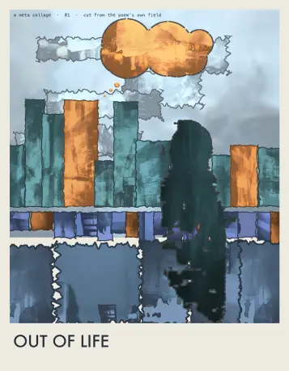
THE META COLLAGES
Fourteen posters, one per poem — a collage made out of the collages, on a value ladder that keeps a poster legible, with the hue taken from the most-saturated decile rather than the most common colour.
Contact sheet generated into the folder.
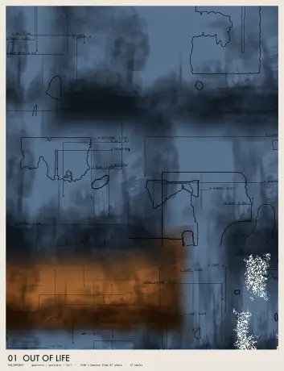
THE SECOND PASS
Fourteen works rebuilt with a voice each: eight geometries, five formats, coverage from 0.34 to 1.00, four palette structures, and mark weight set inverse to coverage so sparse does not read as thin.
Honest gap: nothing was ever rejected. Fourteen went in and fourteen came out. 06 and 09 still share the constellation geometry. Written up in cut/pf/SECOND_PASS.md. Contact sheet generated into the folder.
THE PARTS
Every shot reduced to its parts — the second-moment anchors that binding carries by.
Contact sheet generated into the folder.
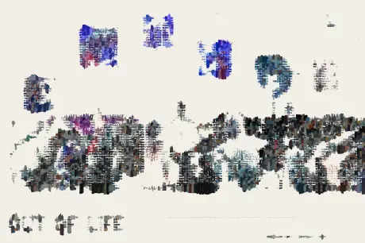
THE BEFLIX SHEETS
The ink field proved out: the dot law at eight levels, sheet by sheet.
Contact sheet generated into the folder.
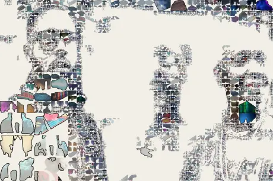
THE QUILT / THE SWAP / THE FIT
Three small studies that each answered one question: can a shot be quilted, can two parts be swapped, can a piece be fitted to a limb.
The swap is in cut/out/partswap, the fit in cut/out/bind. Contact sheet generated into the folder.
WATCH the cuts · 7
A · THE PQ REEL
The reel that never re-encodes: every shot passed through at its real duration, 5.04s to 39.17s, so the HDR is not thrown away by being flattened.
29 MB.
B · THE WINDOW AND THE DOOR
The suite cut to its own script — 111 stanzas with screen text, voiceover and an image-function, which no previous cut had ever referenced.
373 MB.
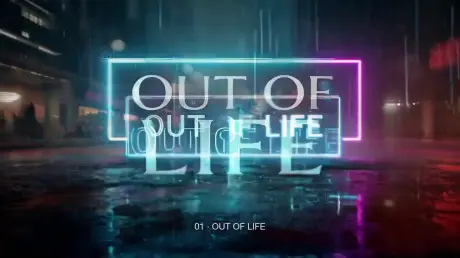
C · THE DECK AT 60BPM
Cut to a grid: one bar per shot at sixty beats per minute, with its own score.
243 MB. A silent version sits beside it.

D · THE DOOR
Ends on P014 — the single shot in the whole archive of an open, lit doorway, which had been sitting in the middle of poem 01.
108 MB.
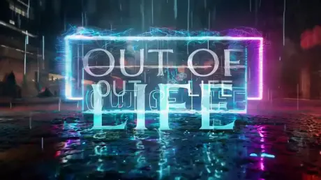
E · THE DOOR, SCORED
D again, carried on mareamemory 06.
125 MB. Silent version beside it.
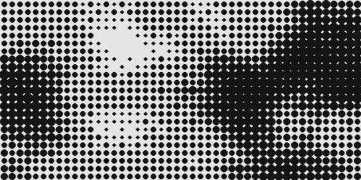
THE SUITE PLAYER
The fourteen poems as a suite, playable in the browser.
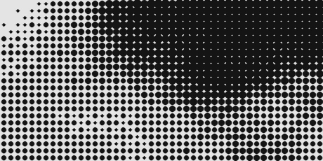
THE COVERAGE MATRIX
Which stanza every one of the 135 shots actually covers — the page that showed the category field was a garbage bucket.
STOCK the material it was all cut from · 8
THE SEGMENTS
Every clip the seven cuts were assembled from, kept whole and kept separate: the churn, the deck, the journeys, Moussa, the music, the shorts and the bastard pass.
Seven folders, one per cut. This is the pile; the cuts are F01–F05. Contact sheet generated into the folder: 300 of 1,681 shown, the rest listed.
THE CUT-OUTS
2,033 subjects lifted out of the archive, each one a figure floating in a transparent frame — the pile every socket draws from.
The sheet shows the web-sized twin (cut/out/thumbs — cropped to alpha, capped at 256px, 8.9 MB); each thumbnail links to its full-size original. Contact sheet generated into the folder: 300 of 4,067 shown, the rest listed.
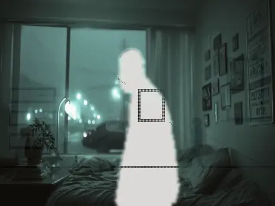
THE HARVEST
521 renders in two passes — each shot read against itself and against its contrary, world over subject and subject over real.
Two passes: harvest and harvest_flow. Contact sheet generated into the folder: 300 of 521 shown, the rest listed.
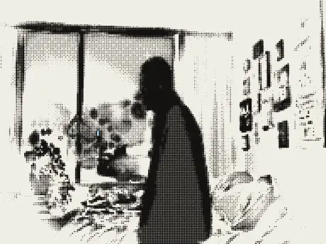
ARS POETICA
Four treatments of the same shot rendered side by side — ink, subject-ink, subject-real, world-ground — so the difference between them could be looked at rather than argued about.
Contact sheet generated into the folder.
THE LEADS
One lead per poem, cut long: the fourteen pieces of footage the suite was previsualised from.
Contact sheet generated into the folder.
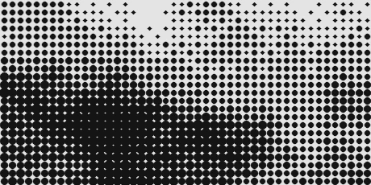
THE BEDS AND THE MIXES
The sound beds and mixes built per poem, plus the two pitched takes the music study turned on.
Contact sheet generated into the folder.
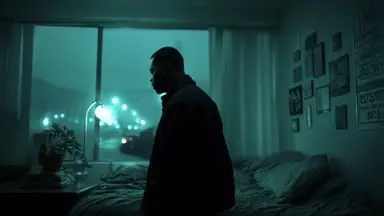
THE FRAMES AND THE SHEETS
A mid-frame extracted from all 135 shots, and the contact sheets made from them — the evidence that showed the category field was a garbage bucket.
Two folders: cut/frames and contact_sheets. Contact sheet generated into the folder.
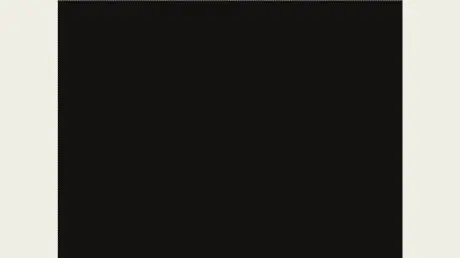
THE HALFWORLDS
Fourteen halfworlds, one per poem: a whole place rendered at the dot law rather than a shot of one.
Contact sheet generated into the folder.
READ the record · 7
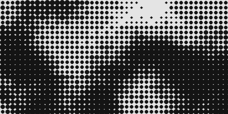
THE LEDGER
What this pass saw, what it changed, and what it got wrong on the way. A ledger with no failures is a falsified ledger.
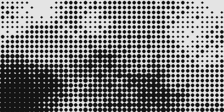
THE CUT README
How the five cuts were made and what each one is for.
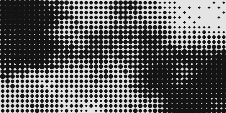
THE OPERATOR NOTES
Twenty-four notes written while building: the patch ontology, the quad warp, binding by follow and by fit, the nine blends, the undo model, what picking is, and the two films problem.
Contact sheet generated into the folder: 0 of 55 shown, the rest listed.
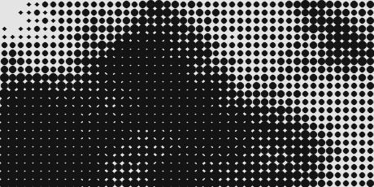
THE SECOND-PASS NOTE
Why the first second pass failed — every work had the same structure and only the hue changed — and what a voice actually needs.
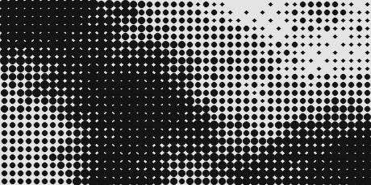
THE FIT NOTE
The one gap left open: a picked region is not yet a bindable part. One step, not a system.
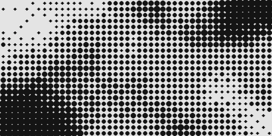
THE COVERAGE MAP
The archive measured against the poems, stanza by stanza.
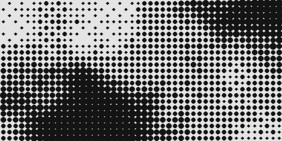
THE SIBLING ATLAS
The other body of work in this repository, indexed in its own record idiom: the city, the world, the radio, the spine key, sixty-six entries.
Not this archive. Linked because this is the only place the two indexes meet.